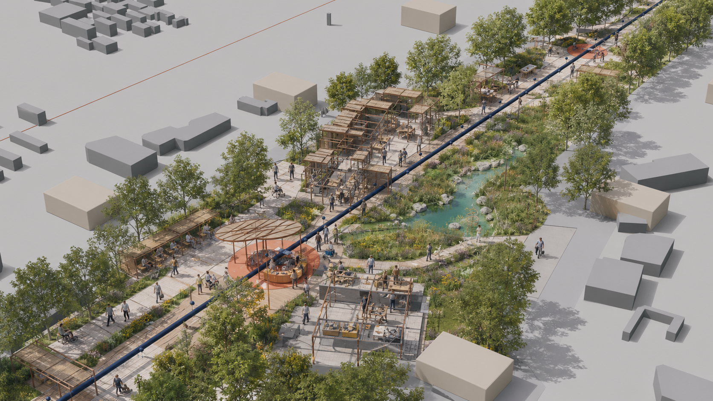
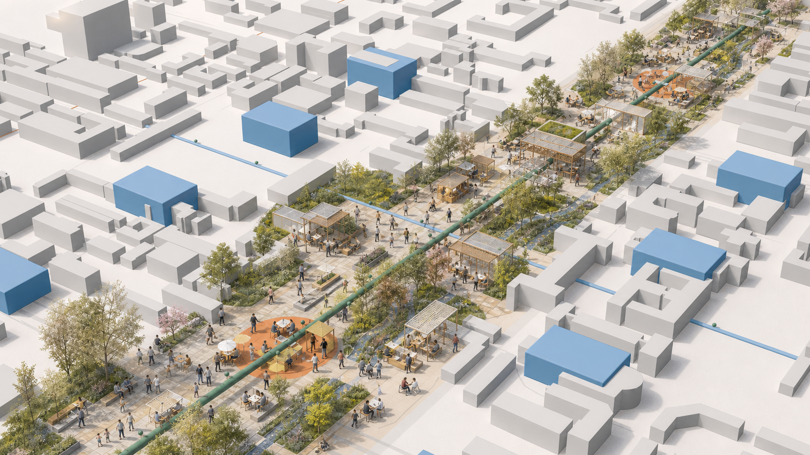
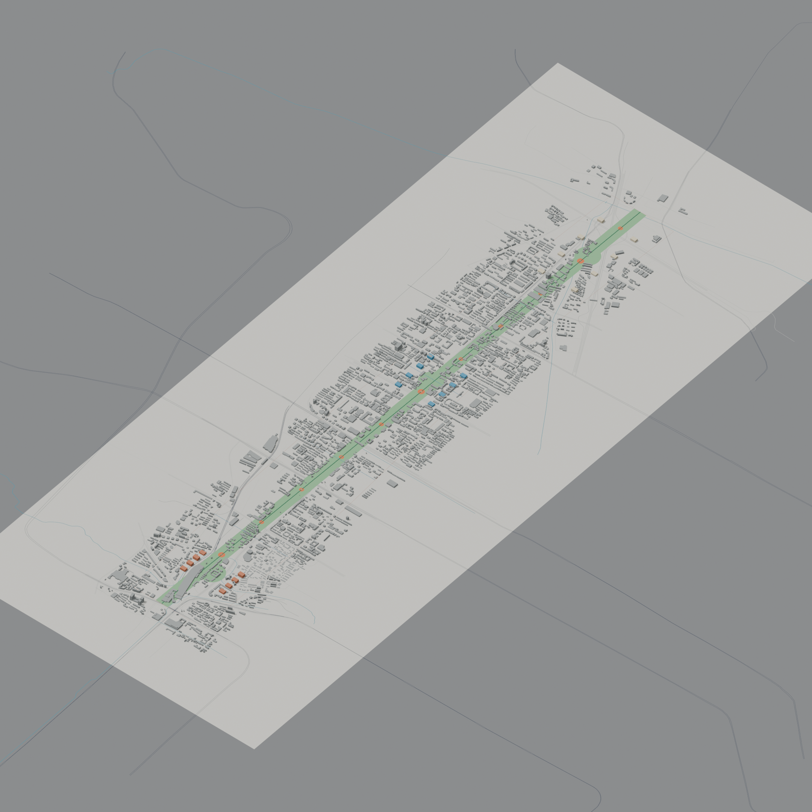

京张共长线：与每一代人共同成长的 AI 创新带
以 8–80 岁全龄友好为基本评价尺度，构建一条共长脊、三座代际院和十二个成长站，形成创新应用、公共服务与城市更新协同推进的空间框架。
京张共长线 / GROW WITH JINGZHANG
> 以人的成长检验技术创新，以连续、包容、可维护的公共空间承载儿童探索、青年实践、成果转化、设施运维与长者独立出行，建设面向全龄人群的 AI 创新带。

设计依据与资料清单
本方案依据官方公告明确的三层研究范围和三处重点区域，按照任务书形成项目命名、案例研究、人才画像、AI 应用场景、标志性空间、文化叙事及长期运营等成果。处理后的事实包用于资料检索和任务导航，各项判断均回溯至登记来源。[source:OFFICIAL-ANNOUNCEMENT] [source:AGENT-TASKBOOK] [source:PROCESSED-FACT-PACK] [standard:PROJECT-OFFICIAL-ANNOUNCEMENT] [standard:PROJECT-AGENT-OPEN-CALL-TASKBOOK] [standard:MOHURD-URBAN-DESIGN-MEASURES] [standard:MOHURD-CONTROL-DETAILED-PLANNING] [standard:MOHURD-ARCH-DESIGN-DEPTH-2016] [depth:existing_conditions_diagnosis]
现阶段资料包尚未提供正式总体边界、重点区多边形、地块及道路红线、现状建筑、权属、市政、文保和审定控规。提交采用的 SITE_BOUNDARY 与 KEY_AREA 来源于临时粗略边界，属性标记为 official_boundary=false、geometry_role=provisional_constraint。相关坐标、面积、比例、建筑基底和路线用于概念方案推演、自检及公众讨论；正式资料发布后，应统一替换底图并完成指标复算和方案校核。[source:BOUNDARY-SOURCE] [source:KEY-AREA-SOURCE] [source:SOURCE-REGISTRY] [data:geometry/site_boundary.geojson#SITE-001] [metric:site_area_sqm]
外部案例研究重点提炼可转化的规划机制，包括巴黎的近邻生活与设施复用、维也纳面向照护链条的包容性规划、Punggol 的产学政社协同、Kalasatama 的敏捷试点、Barcelona 的公共空间重构、Kendall Square 的混合使用与公众审议，以及 Paris-Saclay 的科研、居住和服务一体化。研究结果表明，创新城区应以完善日常生活基础设施为基本支撑。[source:CASE-PARIS-15M] [source:CASE-VIENNA-GENDER] [source:CASE-PUNGGOL] [source:CASE-KALASATAMA] [source:CASE-BARCELONA-SUPERBLOCK] [source:CASE-KENDALL] [source:CASE-PARIS-SACLAY]
规划目标：以 8–80 岁全龄友好检验 AI 应用
“8–80”作为全龄友好评价尺度，重点检验儿童和长者在公共交通、数据最小化、数字设备可及性等条件下，能否独立、安全、有尊严地完成到达、理解、使用和离开。AI 场景设置四项准入要求：**儿童安全、无障碍、人工接管、实体服务渠道**。未通过准入评估的场景纳入受控试验，完成整改和复核后再行评估公共服务应用条件。[source:PRINCIPLE-UNHABITAT]
项目中文名“京张共长线”，英文名“GROW WITH JINGZHANG”。标识由两条平行轨线与一组年轮相交：轨线延续百年京张的时间脉络，年轮表达不同世代的共同成长，开放缺口对应公众反馈、服务退出和持续更新机制。视觉体系采用纸张底色、铁路墨色、叶绿和公共橙，形成清晰、克制的“生长刻度”。
三层范围工作框架
统筹研究范围回答“何种创新生态值得城市承载”；总体设计范围回答“公共脊、混合用地、慢行蓝绿和更新序列如何协同”；三处重点区回答“价值如何在具体日常场景中被验证”。[depth:three_level_scope_framework] [depth:overall_spatial_structure]
| 层级 | 关键问题 | 本方案输出 | 边界 | |---|---|---|---| | 43.6 km² 统筹研究范围 | 产业、人才、生活与治理如何形成生态 | “研究—开源—转化—试用—维护—复盘”六步共长链 | 战略机制，不新增红线 | | 约 11.4 km² 总体设计范围 | 城市形态如何适配不同人生阶段 | 一条共长脊、六类混合功能、十二个成长站 | 临时粗略边界内的概念拓扑 | | 368.4 ha 重点区 | 三处片区如何分工而不复制 | 好奇入城院、共同学习院、责任试作院 | 公告面积为文本事实，多边形为临时示意 |

统筹研究范围产业与未来城市研究
产业生态围绕六项城市支持任务组织：高校与实验室提出问题，开源社区公开方法，企业与团队推进成果转化，市民参与低风险场景试用，维护人员记录运行失效与全生命周期成本，独立审议机构将评估结果反馈至下一轮。方案借鉴 Punggol 的共址机制与 Kalasatama 的敏捷试点方法，并将儿童、长者、无障碍使用者和一线维护人员纳入共同评审。[source:CASE-PUNGGOL] [source:CASE-KALASATAMA]
方案将创新人才及其城市支持人群细分为六类：①儿童与照护者，配置安全探索和停留设施；②中学生与大学生，提供低成本学习、试验和展示空间；③研究者与创业者，支持开源协作、测试和成果转化；④服务与维护人员，完善后勤、培训和贡献记录；⑤残障人士与老年人，保障连续无障碍、清晰信息和人工窗口；⑥国际访客，提供多语言、低数字依赖的到达服务。维也纳“复杂出行链”方法用于识别照护、采购、接送、轮班等复合需求，并据此优化日常出行网络。[source:CASE-VIENNA-GENDER]
总体设计范围城市更新与控规深度城市设计
总体结构为“**一条共长脊、三座代际院、两翼赋能、十二个成长站**”。共长脊把京张遗址公园周边的慢行、林荫、公共服务和创新展示组织为连续公共界面；三座代际院对应重点区；两翼分别连接中关村技术服务资源与小月河应用场景资源；十二站以可逆的小尺度公共空间承载学习、休息、维修、展示与人工服务。[data:geometry/roads.geojson#ROAD-01] [data:geometry/public_space.geojson#PUBLIC-01] [metric:growth_station_count]
方案划分责任试作、代际服务、共同学习、文化公共、AI 生活和蓝绿弹性六类概念功能，并采用共享边界组织连续空间。该分类用于检验产业功能与日常服务在步行尺度内的复合关系；法定用地性质及比例应在控制性详细规划阶段确定。[data:geometry/land_use.geojson#LU-01] [standard:MNR-LAND-USE-CLASSIFICATION-GUIDE] [depth:land_use_layout]
建筑更新坚持存量提质和审慎增量，优先延长既有建筑使用寿命，复合利用闲置时段，推进首层及屋顶适应性改造。保留、改造和更新方式应依据安全、权属、文保、结构及运营评估综合确定。当前建筑图层用于表达概念空间颗粒，后续结合现状调查形成分类处置方案。[source:PRINCIPLE-AMSTERDAM-CIRCULAR] [data:geometry/buildings.geojson#BLDG-01-01] [depth:retain_renovate_demolish]
容积率、建筑高度、建筑密度、退线、道路红线和市政容量暂按 unknown/pending 登记，待正式控规及专项评估成果明确后校核确定。[metric:floor_area_ratio] [depth:development_intensity_controls]
重点区域详细设计

1. 众智园：责任试作院 / Responsible Prototyping Garden
重点承担 AI 原型测试、责任评估和公开审议功能。沿绿色界面布置低速机器人 8–80 路测环、儿童安全对话代理红队室、端侧设备离线及能耗测试台和维修学徒工坊。测试结果通过公众可读的“模型营养标签”公开用途、数据范围、失效情形、责任人员、退出方式和复审日期。安静观察廊、受控试验庭、维护后场与公众审议台分区组织，保障测试、维护和公众活动有序开展。[data:geometry/key_areas.geojson#PROV-KEY-001]

2. 北京 AI 原点社区：共同学习院 / Co-learning Commons
重点承担跨代学习、开源协作和人才生活服务功能。高校、社区、开源团队及配套服务沿可步行共享首层网络布局，设置青年城市问题工作室、跨代数字诊所、开源发布厨房、教师审核的学习辅助台，以及短租和家庭支持服务。借鉴 Kendall Square 与 Paris-Saclay 的混合使用机制，促进创新空间与住房、公共服务、开放空间和审议机制协同建设。[source:CASE-KENDALL] [source:CASE-PARIS-SACLAY] [data:geometry/key_areas.geojson#PROV-KEY-002]

3. 大钟寺：好奇入城院 / Curious Arrival Commons
重点承担轨道到达、公共 AI 素养普及和街区综合服务功能。围绕轨道站点至周边街区的四象限步行联系，配置易识别导视、人工咨询台、家庭友好停留点和多语言城市说明，形成连续到达序列。数字服务采用自愿参与和最小数据原则，实体导视覆盖完整出行流程；商业展示同步公开适用范围、运维责任和数据权利。[data:geometry/key_areas.geojson#PROV-KEY-003]

三处片区的临时多边形用于区位分析和概念设计。正式边界及现状调查成果明确后，应进一步深化建筑、交通、功能和公共空间方案。[depth:three_key_area_detailed_design] [assumption:A-BOUNDARY-001]
AI 创新生态、人才画像与 AI+ 场景
十二张场景卡均写明主体、空间、数据、人工复核和退出路径。★ 为首轮验证场。
| # | 场景与空间 | 服务对象 / 最小数据 | 人工与退出机制 | |---|---|---|---| | 01 | AI 素养游乐场·好奇入城院 | 儿童家庭；不采集人脸与身份信息 | 现场教育员；全部设施支持实体使用 | | 02 | 多语言京张漫游·共长脊 | 访客；自愿选择语言 | 人工导览与纸质地图并行 | | 03 | 青年城市问题工作室·共同学习院 | 青少年；匿名问题卡 | 教师/社区导师审核后公开 | | 04 | 学习与职业辅助台·共同学习院 | 学生；本地临时会话 | 教师/咨询师复核；可转人工 | | 05 | 跨代数字诊所·成长站 | 长者与照护者；采用免账户服务 | 志愿者面对面支持；保留纸质流程 | | 06 | 无障碍路线共绘·共长脊 | 残障使用者；自愿标注障碍点 | 无障碍顾问审图；仅发布汇总信息 | | 07★ | 儿童安全对话代理红队·责任试作院 | 受控测试；合成数据优先 | 监护/伦理负责人随时终止 | | 08★ | 低速机器人 8–80 路测·责任试作院 | 测试员；仅设备遥测 | 安全员接管；物理绕行路径常开 | | 09★ | 隐私保护学习工具测试·共同学习院 | 自愿样本；最小化输入 | 教师复核；与正式教学评价分离 | | 10★ | 端侧离线与能耗测试·责任试作院 | 设备级性能数据 | 工程师签字；失败即退回实验室 | | 11 | 维护学徒工坊·责任试作院 | 维护人员；工单去标识 | 师傅复核；公开维修手册 | | 12 | 模型营养标签与贡献墙·三院 | 汇总证据；无个人排名 | 独立审议；到期自动下架复审 |
医疗、法律、教育和公共安全相关输出定位为辅助信息，由具备相应资质的专业人员复核。各项数字服务应同步保留人工窗口、现金或纸质渠道及申诉机制。[source:PRINCIPLE-UNHABITAT] [metric:ai_scenario_card_count]
用地、建筑规模与拆改留方案
概念用地由六个共享边界的多边形完整覆盖临时总体范围，分别承载责任试作、代际服务、共同学习、文化公共、AI 生活和蓝绿弹性功能。完整覆盖用于验证图层拓扑和指标复算；商业、科研、居住、教育及绿地代码作为数据交换中的主导属性，具体功能比例和兼容关系应在法定规划中校准。[data:geometry/land_use.geojson#LU-01] [standard:MNR-LAND-USE-CLASSIFICATION-GUIDE] [depth:land_use_layout]
建筑基底集中表达三处重点区的概念空间颗粒，统一标记为混合功能。后续应补充现状建筑、权属、结构安全、历史文化、消防和市政资料，按照“现状调查—价值评估—安全评估—运营可行性—公众意见”开展综合诊断，形成保留、微改造、适应性再利用和必要更新的分类方案，并据此论证新增建设需求。[data:geometry/buildings.geojson#BLDG-01-01] [depth:height_massing_character] [depth:retain_renovate_demolish]
建筑总规模、容积率、高度、密度、退线和停车配建暂按 unknown 登记；概念基底面积用于检查图层与图纸一致性。约束图层当前为空，相关控制条件待法定规划和主管部门资料明确后补充。[metric:building_footprint_area_sqm] [metric:floor_area_ratio] [data:geometry/constraints.geojson#CONSTRAINTS] [assumption:A-CONTROLS-001]
交通、轨道、市政与公共服务设施
交通系统以儿童、长者、轮椅使用者和携带行李人群的连续通行为基本评价尺度。共长脊重点配置连续遮阴、平缓坡度、休息设施、安全过街和低冲突骑行空间，成长横街加强东西向日常联系。概念中心线应结合道路红线、轨道、消防、市政和交通模型开展专项校核。[data:geometry/roads.geojson#ROAD-01] [depth:traffic_rail_slow_parking] [assumption:A-MOBILITY-001]
新型基础设施采用小型化、分布式和可独立运行的配置方式。公共空间传感优先采用边缘处理和短期留存，每个智能节点公开数据用途、保存期限和责任人员；照明、导视、求助和通行等基本功能具备停电、断网及未授权状态下的运行方案。市政容量、防洪排水、能源、消防和通信条件纳入实施前置核查。[depth:municipal_new_infrastructure]

蓝绿空间、公共空间与城市风貌
蓝绿系统按照日常公共服务基础设施进行组织：连续林荫缓解热暴露，雨水花园承担源头消纳和生态教育，连续座椅服务长者、孕妇和儿童，安静空间满足感官敏感人群需求。十二个成长站沿公共脊均衡布局，完善连续通行、短时休息和人工咨询服务。[data:geometry/green_space.geojson#GREEN-01] [metric:green_ratio] [metric:public_space_ratio] [depth:blue_green_public_space]
三处标志性空间采用适度尺度和开放界面：**第一问廊**持续收集公众议题及办理进展；**最慢一公里**以行动不便人群的完成时间评价通行质量；**共长年轮**按年度记录开源贡献、设施维护、儿童提问和服务调整案例。整体风貌以清晰的空间结构、精细的人本设施和可持续材料为主要特征。[source:PRINCIPLE-NEB]
更新项目清单、实施政策与分期计划
| 项目 | 近期可逆动作 | 中期条件 | 长期治理 | |---|---|---|---| | G-01 共长脊首段 | 临时遮阴、座椅、实体导视、无障碍走查 | 道路/轨道/消防专项 | 年度 8–80 审计 | | G-02 三院首层网络 | 空置时段共享与小额改造 | 权属、结构、运营协议 | 公共收益回投 | | G-03 四类验证场 | 合成数据和受控志愿测试 | 独立伦理、安全与数据评估 | 场景日落复审 | | G-04 十二成长站 | 先建 3 个样板站 | 设施和市政接入 | 社区共同维护 | | G-05 模型营养标签 | 发布开源字段模板 | 第三方审计接口 | 跨项目互认 | | G-06 共长年轮 | 年度公开复盘 | 档案与版权清权 | 长期公共记忆 |
分三期推进：近期开展低成本、可逆的公共空间试点和四类验证场，建立使用评价与运行数据；中期在法定规划和工程条件明确后实施空间缝合与功能适配；远期建立持续共治和滚动更新机制，通过年度审计确定项目保留、调整或终止安排。[data:geometry/phasing.geojson#PHASE-01] [depth:renewal_project_list] [depth:phasing_implementation]
运营管理建立四类公开台账：场景台账记录用途和风险，数据台账记录来源及删除情况，维护台账记录停机和成本，公共效益台账记录服务覆盖及使用障碍。每季度开展运行评估，每年通过“共长周”集中发布成果。具体活动应在实施阶段明确责任主体、审批程序和经费来源。[assumption:A-IMPLEMENTATION-001]
专业数据底座与气候适应策略
本轮深化补充城市背景和十年气候基线。2026-08-08 的 OSM Overpass 数据用于分析城市纹理和网络关系，包括建筑 2899、道路 3646、轨道 135、水系 15、公共交通点 384、设施点 527；© OpenStreetMap contributors，ODbL 1.0。法定边界、权属和现状条件以主管部门资料及现场测绘成果为准。[source:OSM-CONTEXT-20260808] [metric:osm_context_feature_count]
NASA POWER 2015—2024 年日尺度点数据用于概念阶段气候压力分析：日最高温 P95 为 35.58°C，≥35°C 日数约 22.3 日/年，年降水约 649.1 mm，日降水 P95 为 10.15 mm，太阳辐射均值为 4.05 kWh/m²/日。相应空间措施包括连续遮阴、雨水源头消纳与安全溢流、冬季向阳避风，以及基于监测结果的分阶段建设。排水、风热和能源参数应结合现场监测及专业模型进一步确定。[source:NASA-POWER-2015-2024] [source:BEIJING-SPONGE-CITY] [source:BEIJING-RESILIENT-CITY] [source:BEIJING-CLIMATE-ADAPTATION] [source:BEIJING-RAIN-GARDEN-STANDARD] [metric:climate_heat_days_ge_35c_per_year] [metric:climate_annual_precip_mm] [metric:climate_mean_solar_kwh_m2_day]

三处重点区域以 Blender 建立空间基模，并通过图像模型深化形成设计意向图。图中人物、植栽成熟度、材料和建筑形态用于表达概念场景；建设条件和工程做法应以后续审批及专项设计成果为准。数据来源、假设条件和指标说明分别记录于 sources.json、assumptions.json 与 metrics.json；离线三维证据查看器见 visual/index.html。[source:BLENDER-52-MODEL] [source:OPENAI-IMAGEGEN-SCENES] [source:THREEJS-OFFLINE-EXHIBIT]
指标体系、面积复算与合规矩阵

| 指标 | 当前值 | 可信度与解释 | |---|---:|---| | 临时总体边界面积 | 11.413 km² | 中；依据临时粗略多边形在 EPSG:4548 复算，正式面积以官方红线为准 | | 概念建筑基底 | 11.29 ha | 低；用于表达重点区空间颗粒，拆改留及开发强度待专项论证 | | 概念绿地占比 | 18.95% | 低；依据设计图层和临时边界计算，后续与审定绿地指标衔接 | | 概念公共空间占比 | 2.19% | 低；公共空间与绿地存在重叠，土地平衡阶段应分类核算 | | 重点区域数 | 3 | 中；名称和公告面积可信，多边形位置临时 [metric:key_area_count] | | 场景卡 / 验证场 | 12 / 4 | 高；可从正文计数 |
所有 known 指标均关联可复算文件；FAR 等待法定条件明确的指标保持 unknown。合规矩阵将公告条目、报告章节、图层、图纸、来源、假设和自检项逐项对应。[metric:building_footprint_area_sqm] [metric:floor_area_ratio] [depth:metrics_recalculation]
风险、版权与合规说明
本成果为开源征集阶段的概念城市设计，适用于方案比选、公众讨论和后续深化。法定控规、土地权属、建设规模、道路方案及实施安排以主管部门审查和项目决策为准。外部案例用于方法研究，控制指标依据北京法定规划确定。图形、图纸和网页均依据本地结构化数据生成，采用本地脚本、字体和数据资源；来源及许可见 sources.json 和 report/copyright_statement.md。[depth:risk_missing_data]
下一阶段应补充官方总体与重点区边界、现状地形、道路、地块、建筑、权属、文保、控规、市政管线与容量、消防与交通模型、公共服务清单和公众参与记录，并据此开展专业校核，形成可进入规划审查和项目实施论证的深化成果。
参考资料
官方依据包括征集公告、面向智能体任务书、仓库 site package、来源登记与处理事实导航；它们分别控制任务范围、成果结构、数据可用性和精度声明。[source:OFFICIAL-ANNOUNCEMENT] [source:AGENT-TASKBOOK] [source:SITE-PACKAGE] [source:SOURCE-REGISTRY] [source:PROCESSED-FACT-PACK]
城市设计方法参照包括 Paris 15-minute city、Vienna gender mainstreaming、Punggol Digital District、Smart Kalasatama、Barcelona superblocks、Kendall Square 与 Paris-Saclay；人本智能治理、综合美学和循环更新原则分别参照 UN-Habitat、New European Bauhaus 与 Amsterdam circular economy。[source:CASE-PARIS-15M] [source:CASE-VIENNA-GENDER] [source:CASE-PUNGGOL] [source:CASE-KALASATAMA] [source:CASE-BARCELONA-SUPERBLOCK] [source:CASE-KENDALL] [source:CASE-PARIS-SACLAY] [source:PRINCIPLE-UNHABITAT] [source:PRINCIPLE-NEB] [source:PRINCIPLE-AMSTERDAM-CIRCULAR]
所有外部材料均登记为 background_only，用于研究邻近性、共创试点、混合使用、包容出行、公共空间重构和循环改造等机制。北京地区的空间事实与控制指标依据提交的 GeoJSON、metrics.json、假设清单、仓库登记来源及后续法定规划成果确定。